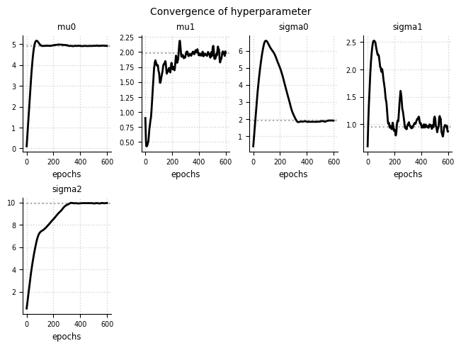
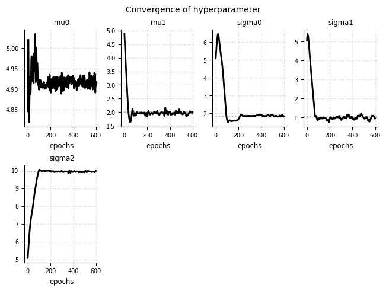

Initialization of hyperparameter values#
# create toy model
import tensorflow_probability as tfp
import matplotlib.pyplot as plt
import tensorflow as tf
import numpy as np
import pandas as pd
import elicit as el
from elicit.extras import utils
tfd = tfp.distributions
# numeric, standardized predictor
def std_predictor(N, quantiles):
X = tf.cast(np.arange(N), tf.float32)
X_std = (X-tf.reduce_mean(X))/tf.math.reduce_std(X)
X_sel = tfp.stats.percentile(X_std, quantiles)
return X_sel
# implemented, generative model
class ToyModel2:
def __call__(self, prior_samples, design_matrix, **kwargs):
B = prior_samples.shape[0]
S = prior_samples.shape[1]
# preprocess shape of design matrix
X = tf.broadcast_to(design_matrix[None, None,:],
(B,S,len(design_matrix)))
# linear predictor (= mu)
epred = tf.add(prior_samples[:, :, 0][:,:,None],
tf.multiply(prior_samples[:, :, 1][:,:,None], X)
)
# data-generating model
likelihood = tfd.Normal(
loc=epred, scale=tf.expand_dims(prior_samples[:, :, -1], -1)
)
# prior predictive distribution (=height)
ypred = likelihood.sample()
# selected observations
y_X0, y_X1, y_X2 = (ypred[:,:,0], ypred[:,:,1], ypred[:,:,2])
# log R2 (log for numerical stability)
log_R2 = utils.log_R2(ypred, epred)
return dict(
likelihood=likelihood,
ypred=ypred, epred=epred,
prior_samples=prior_samples,
y_X0=y_X0, y_X1=y_X1, y_X2=y_X2,
log_R2=log_R2
)
ground_truth = {
"beta0": tfd.Normal(loc=5, scale=1),
"beta1": tfd.Normal(loc=2, scale=1),
"sigma": tfd.HalfNormal(scale=10.0),
}
eliobj = el.Elicit(
model=el.model(
obj=ToyModel2,
design_matrix=std_predictor(N=200, quantiles=[25,50,75])
),
parameters=[
el.parameter(
name="beta0",
family=tfd.Normal,
hyperparams=dict(
loc=el.hyper("mu0"),
scale=el.hyper("sigma0", lower=0)
)
),
el.parameter(
name="beta1",
family=tfd.Normal,
hyperparams=dict(
loc=el.hyper("mu1"),
scale=el.hyper("sigma1", lower=0)
)
),
el.parameter(
name="sigma",
family=tfd.HalfNormal,
hyperparams=dict(
scale=el.hyper("sigma2", lower=0)
)
),
],
targets=[
el.target(
name=f"y_X{i}",
query=el.queries.quantiles((.05, .25, .50, .75, .95)),
loss=el.losses.MMD2(kernel="energy"),
weight=1.0
) for i in range(3)
]+[
el.target(
name="log_R2",
query=el.queries.quantiles((.05, .25, .50, .75, .95)),
loss=el.losses.MMD2(kernel="energy"),
weight=1.0
)
],
expert=el.expert.simulator(
ground_truth = ground_truth,
num_samples = 10_000
),
optimizer=el.optimizer(
optimizer=tf.keras.optimizers.Adam,
learning_rate=0.1,
clipnorm=1.0
),
trainer=el.trainer(
method="parametric_prior",
seed=0,
epochs=600
),
initializer=el.initializer(
hyperparams = dict(
mu0=0., sigma0=el.utils.LowerBound(lower=0.).forward(0.3),
mu1=1., sigma1=el.utils.LowerBound(lower=0.).forward(0.5),
sigma2=el.utils.LowerBound(lower=0.).forward(0.4)
)
)
)
C:\Users\bockting\AppData\Roaming\Python\Python311\site-packages\bayesflow\trainers.py:27: TqdmExperimentalWarning: Using `tqdm.autonotebook.tqdm` in notebook mode. Use `tqdm.tqdm` instead to force console mode (e.g. in jupyter console)
from tqdm.autonotebook import tqdm
eliobj.fit()
Training
100%|██████████| 600/600 [03:17<00:00, 3.04it/s]
el.plots.hyperparameter(eliobj)

import copy
eliobj2 = copy.deepcopy(eliobj)
initializer_updated = el.initializer(
method="sobol",
loss_quantile=0,
iterations=32,
distribution=el.initialization.uniform(
radius=10.,
mean=0.
)
)
eliobj2.update(initializer=initializer_updated)
INFO: Results have been reset.
eliobj2.fit()
Initialization
100%|██████████| 32/32 [00:05<00:00, 6.36it/s]
Training
100%|██████████| 600/600 [03:46<00:00, 2.65it/s]
el.plots.hyperparameter(eliobj2)
